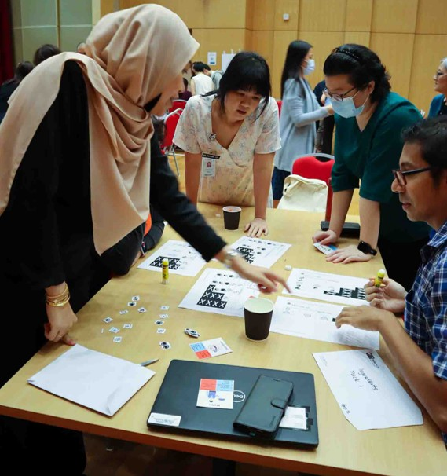

Looking Back At 2024
As some of the people that I have followed (Crystal Lewis and Ken Vũ) on social media have written their current life’s journey and reflections for 2024 and I also wanted to try out the new scrollytelling feature in Quarto. I have decided to try something new this year and write my own 2024 reflections using this new Quarto feature.
Here goes nothing…
Table of Content
- R4DS Book Club Cohort 9
- Interprofessional Practice & Education (IPE) Day 2024: Building Bridges, Breaking Barriers
- Sing On 3
- International Krakow Choir Festival Cracovia Cantans 2024
- useR! 2024
- European Society of Cardiology (ESC) Congress 2024
- R User Group Singapore (RUGS) November Meetup
- Giving Back In December
- Dance Fitness Progress
- Reflections
Interprofessional Practice & Education (IPE) Day 2024: Building Bridges, Breaking Barriers
I had attended IPE day for the first time on 29 Feb 2024. It was an opportunity for healthcare professional to meet up, share and learn how to improve collaboration and the quality of care for patients.
I initially thought that I would be lonely as I was a research officer who had just started his job in less than a year. However, I was wrong. The people that I had met were friendly and just wanted to know me as a person, rather than my limited background in the medical field.
One of the highlights of the event is NNIPENDO. It is based on a collaborative game inspired by a popular multiplayer game, Overcooked. The objective was to earn the most gold coins by making dishes within the limitations of each team member’s assigned role.
I was assigned as the cook and had to cut and paste ingredients on the paper to create a dish but I could not leave the table to get the ingredients. The role turned out to be great for a quiet observer (and data cleaner) like me as I am able to create the dishes quickly in spite of the many ingredients scattered across the table. The team that I was in managed to get second place.
Back to top


R User Group Singapore (RUGS) November Meetup
It started when an R enthusiast, Nien Xian contacted me via Linkedin around March 2024 and expressed interest in meeting other R users in Singapore. This led to a series of events that caused the revivial of the R User Group Singapore (RUGS) Meetup on November 2024 after its hiatus for a few years, in spite of limited experience and resources.
During the event, I had presented how to create a simple Quarto dashboard of Singapore’s Fertility rate using the fertility and live birth datasets that was available at https://data.gov.sg/
Here is how the fertility dashboard looks like
Back to top

R Session and Packages Used
Here are the R packages used.
Here is the R session used to generate this webpage.